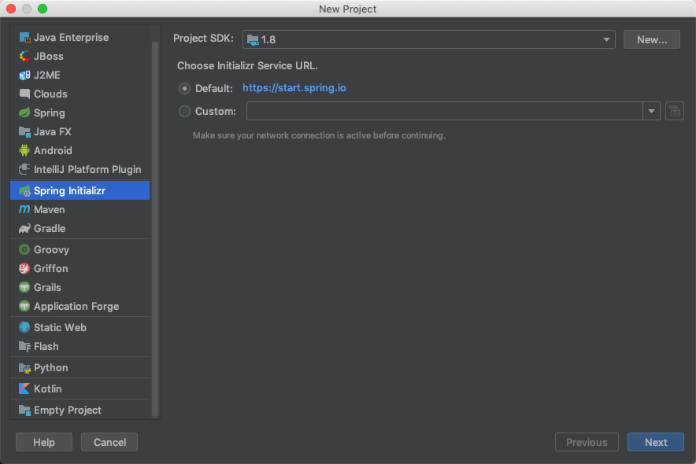
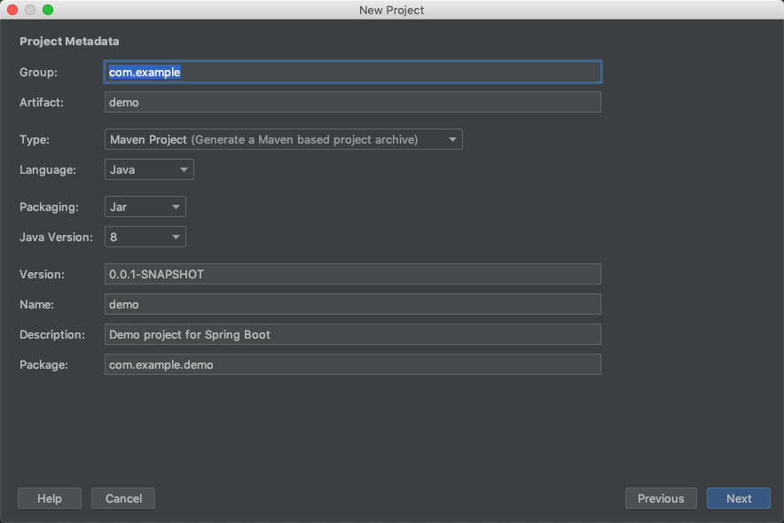
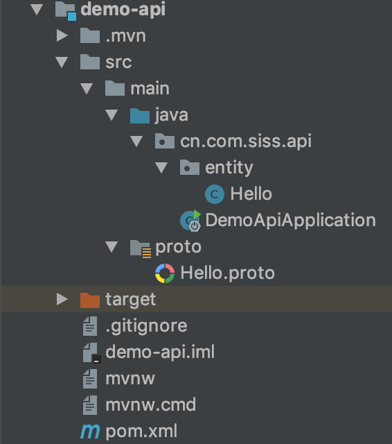

1. GRPC的使用
1.1. 简介
grpc 由 google 开发,是一款语言中立、平台中立、开源的远程过程调用(RPC)系统。它是一个高性能、开源和通用的RPC框架，面向移动和HTTP/2设计。 目前提供C、Java和Go语言版本，分别是grpc、grpc-java、grpc-go。 gRPC基于HTTP/2标准设计，带来诸如双向流、流控、头部压缩、单TCP连接上的多复用请求等特性。

1.2. grpc的使用
本章主要结合java中 的SpringBoot 集成 grpc而展开。
1.2.1. 数据结构对应表
| .proto类型 | Java 类型 | C++类型 | 备注 |
|---|---|---|---|
| double | double | double | |
| float | float | float | |
| int32 | int | int32 | 使用可变长编码方式。编码负数时不够高效——如果你的字段可能含有负数，那么请使用sint32。 |
| int64 | long | int64 | 使用可变长编码方式。编码负数时不够高效——如果你的字段可能含有负数，那么请使用sint64。 |
| uint32 | int[1] | uint32 | Uses variable-length encoding. |
| uint64 | long[1] | uint64 | Uses variable-length encoding. |
| sint32 | int | int32 | 使用可变长编码方式。有符号的整型值。编码时比通常的int32高效。 |
| sint64 | long | int64 | 使用可变长编码方式。有符号的整型值。编码时比通常的int64高效。 |
| fixed32 | int[1] | uint32 | 总是4个字节。如果数值总是比总是比228大的话，这个类型会比uint32高效。 |
| fixed64 | long[1] | uint64 | 总是8个字节。如果数值总是比总是比256大的话，这个类型会比uint64高效。 |
| sfixed32 | int | int32 | 总是4个字节。 |
| sfixed64 | long | int64 | 总是8个字节。 |
| bool | boolean | bool | |
| string | String | string | 一个字符串必须是UTF-8编码或者7-bit ASCII编码的文本。 |
| bytes | ByteString | string | 可能包含任意顺序的字节数据。 |
1.2.2. 新建项目
首先通过ideal创建一个springboot的项目。

填写 包名 组名等基本信息。

1.2.3. 项目的编写
创建好项目后 修改 pom.xml
<!-- 父包名称 -->
<parent>
<groupId>cn.com.siss</groupId>
<artifactId>spring-boot-starters</artifactId>
<version>0.0.1-SNAPSHOT</version>
<relativePath/> <!-- lookup parent from repository -->
</parent>
<groupId>cn.com.siss</groupId>
<artifactId>demo-grpc</artifactId>
<version>0.0.1-SNAPSHOT</version>
<name>demo-grpc</name>
<!-- packaging 为 pom -->
<packaging>pom</packaging>
<!-- 子模块 -->
<modules>
<module>demo-api</module>
<module>demo-provider</module>
<module>demo-web</module>
</modules>
<dependencies>
<dependency>
<groupId>org.springframework.boot</groupId>
<artifactId>spring-boot-starter</artifactId>
</dependency>
<dependency>
<groupId>org.springframework.boot</groupId>
<artifactId>spring-boot-starter-web</artifactId>
</dependency>
<dependency>
<groupId>org.springframework.boot</groupId>
<artifactId>spring-boot-starter-test</artifactId>
<scope>test</scope>
</dependency>
<dependency>
<groupId>cn.com.siss</groupId>
<artifactId>spring-boot-starter-grpc</artifactId>
<version>0.0.1-SNAPSHOT</version>
</dependency>
<dependency>
<groupId>cn.com.siss.utils</groupId>
<artifactId>siss-utils</artifactId>
<version>0.0.1-SNAPSHOT</version>
</dependency>
</dependencies>
<build>
<plugins>
<plugin>
<groupId>org.springframework.boot</groupId>
<artifactId>spring-boot-maven-plugin</artifactId>
</plugin>
</plugins>
</build>
添加子模块
demo-api 该模块主要存放实体类 proto文件

修改 demo-api 的 pom.xml
<!-- 修改parent -->
<parent>
<groupId>cn.com.siss</groupId>
<artifactId>demo-grpc</artifactId>
<version>0.0.1-SNAPSHOT</version>
</parent>
<!-- 添加依赖 -->
<dependencies>
<dependency>
<groupId>org.springframework.boot</groupId>
<artifactId>spring-boot-starter</artifactId>
</dependency>
<dependency>
<groupId>org.springframework.boot</groupId>
<artifactId>spring-boot-starter-test</artifactId>
<scope>test</scope>
</dependency>
<dependency>
<groupId>org.springframework.boot</groupId>
<artifactId>spring-boot-starter-test</artifactId>
<scope>test</scope>
</dependency>
</dependencies>
<!-- 添加插件 -->
<build>
<plugins>
<plugin>
<groupId>org.springframework.boot</groupId>
<artifactId>spring-boot-maven-plugin</artifactId>
<configuration>
<classifier>exec</classifier>
</configuration>
</plugin>
<plugin>
<groupId>org.xolstice.maven.plugins</groupId>
<artifactId>protobuf-maven-plugin</artifactId>
</plugin>
<plugin>
<groupId>org.sonarsource.scanner.maven</groupId>
<artifactId>sonar-maven-plugin</artifactId>
</plugin>
<plugin>
<groupId>org.jacoco</groupId>
<artifactId>jacoco-maven-plugin</artifactId>
</plugin>
</plugins>
</build>
demo-web 对外提供接口
对外api
@RestController
public class HelloWorld {
@Autowired
private HelloRpcService helloRpcService;
@RequestMapping(value = "/", method = RequestMethod.GET)
public String get(){
System.out.println("controller get method");
String b = helloRpcService.get("qq");
return b;
}
}
rpc层对java对象转化为proto流文件
@Service
@Slf4j
@AllArgsConstructor
public class HelloRpcService {
private HelloServiceGrpc.HelloServiceBlockingStub blockingStub;
public String get(String name) {
Hello hello = new Hello();
hello.setName(name);
HelloProto.HelloDTO dto = (HelloProto.HelloDTO) toGRpcMessage(hello, HelloProto.HelloDTO.newBuilder());
HelloProto.HelloDTO rep = blockingStub.get(dto);
String say = (String) fromGRpcMessage(rep, String.class);
return say;
}
}
定义protobuf
syntax = "proto3";
option java_package = "cn.com.siss.api";
option java_outer_classname = "HelloProto";
message HelloDTO {
string name = 1;
}
service HelloService {
rpc get (HelloDTO) returns (HelloDTO) {}
}
添加config文件注册
@Configuration
@EnableAutoConfiguration
public class HelloConfig {
@GRpcClient("demo-provider")
private ManagedChannel channel;
@Bean
public HelloServiceGrpc.HelloServiceBlockingStub helloServiceBlockingStub(){
return HelloServiceGrpc.newBlockingStub(channel);
}
}
修改application.yml
grpc:
client:
demo-provider:
server-host: localhost
server-port: 7575
enable-keep-alive: true
keep-alive-delay: 60 # seconds
keep-alive-timeOut: 60
demo-provider 对数据做持久化
修改pom文件
<parent>
<groupId>cn.com.siss</groupId>
<artifactId>demo-grpc</artifactId>
<version>0.0.1-SNAPSHOT</version>
</parent>
<!-- 添加依赖 -->
<dependencies>
<dependency>
<groupId>org.springframework.boot</groupId>
<artifactId>spring-boot-starter</artifactId>
</dependency>
<dependency>
<groupId>org.springframework.boot</groupId>
<artifactId>spring-boot-starter-web</artifactId>
</dependency>
<dependency>
<groupId>org.springframework.boot</groupId>
<artifactId>spring-boot-starter-test</artifactId>
<scope>test</scope>
</dependency>
<dependency>
<groupId>cn.com.siss</groupId>
<artifactId>demo-api</artifactId>
<version>0.0.1-SNAPSHOT</version>
</dependency>
</dependencies>
<build>
<plugins>
<plugin>
<groupId>org.springframework.boot</groupId>
<artifactId>spring-boot-maven-plugin</artifactId>
</plugin>
</plugins>
</build>
rpc层
@Slf4j
@GRpcService
public class HelloRpc extends HelloServiceGrpc.HelloServiceImplBase {
@Override
public void get(HelloProto.HelloDTO request,
StreamObserver<HelloProto.HelloDTO> responseObserver) {
HelloProto.HelloDTO response = (HelloProto.HelloDTO) toGRpcMessage(request, HelloProto.HelloDTO.newBuilder());
responseObserver.onNext(response);
responseObserver.onCompleted();
}
}
可以尝试下载demo debug一下
git clone ssh://git@gitlab.sissyun.com.cn:8022/demo/demo-grpc.git